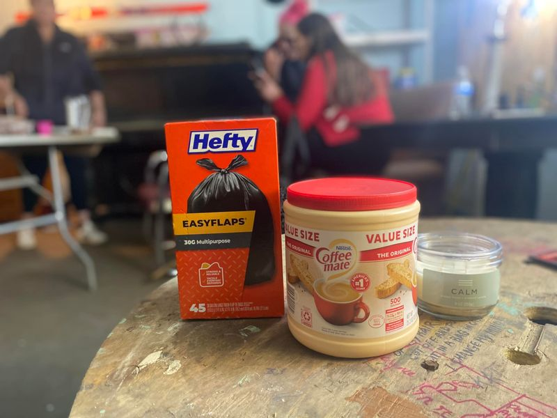

Mobile uploads
I just picked up some trash bags, coffee creamer and a new item I’m trying: a calming candle.
The more I do this homeless work I realize that most of humanity’s problems have very little to do with their physical desires. Even a person with nowhere to live is rarely starving to death or freezing to death. Humans are too cunning and clever to let that happen for long.
Most of our problems are spiritual.
That said: food, coffee and cigarettes are love incarnate. (And given the conversations today with my homeless friends, this calming candle is not helping at all.)
These things cost $22. If you are able to help please donate here:
https://donorbox.org/help-your-homeless-neighbor